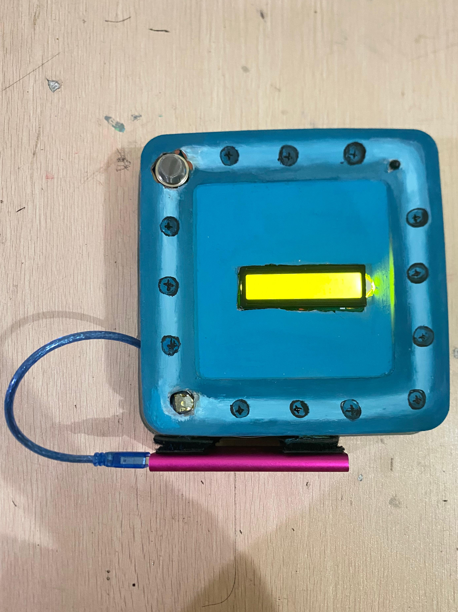

Project ini bertujuan untuk membuat prototipe sistem informasi sekolah berbasis web, yang menampilkan informasi jadwal pelajaran, data siswa, guru, dan keuangan sekolah. Proyek ini dirancang sebagai bagian dari tugas kelompok dan bertujuan untuk melatih kemampuan dasar HTML dan CSS.
Kami menggunakan HTML sebagai dasar struktur halaman dan CSS untuk memberikan desain tampilan yang rapi dan responsif. Dengan project ini, kami belajar banyak mengenai tata letak halaman, penggunaan elemen-elemen web, serta struktur penyusunan konten yang baik.